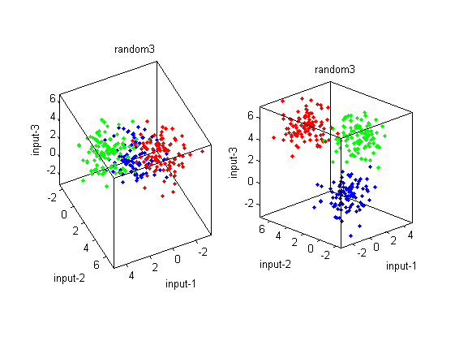
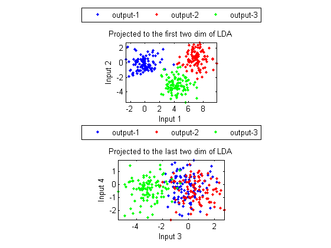
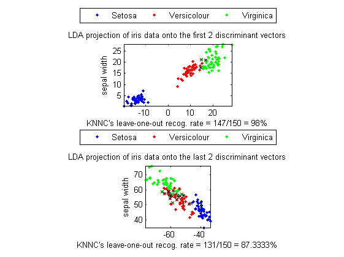
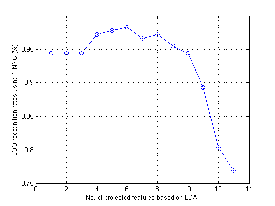
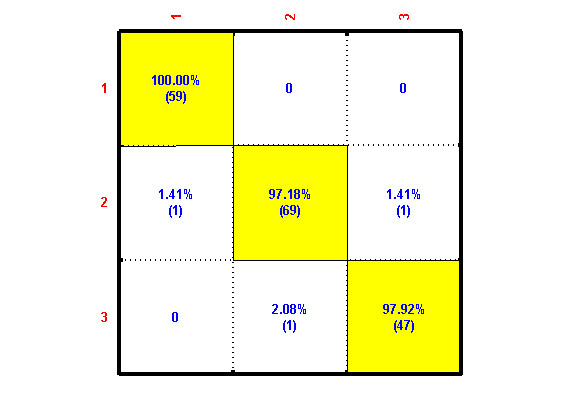
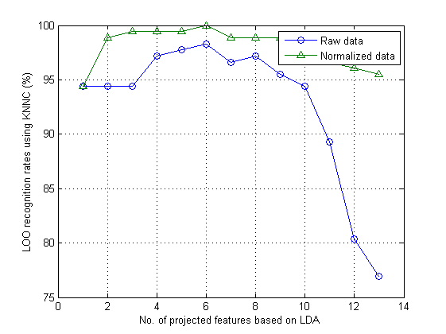
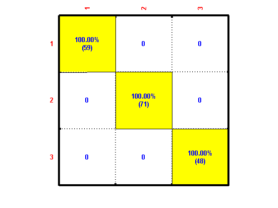

Linear Discriminant Analysis (LDA)
the goal of LDA is to find the best projection (or equivalently, the best viewing angle) such that the separation between classes is maximized. Note that in order to maximize the separation between classes, LDA requires that dataset to be labeled with desired class for each data instance.
Contents
A basic example
Let us take a look at the scatter plot of the dataset "random3" in the 3D space:
DS=prData('random3');
subplot(1,2,1); dsScatterPlot3(DS);
view(155, 46);
subplot(1,2,2); dsScatterPlot3(DS);
view(-44, 22);
 In the above example, the left and right plots are based on the same 300 entries except for different view angles. The left plot seems a bit random since the view angle tends to overlap the projection onto the 2D space. On the otherhand, the right plot give us a much more separation between classes after 2D projection. The goal of LDA is to find the best projection (or equivalently, the best viewing angle) such that the separation between classes is maximized.
The next example applies LDA to the dataset "random3":
DS=prData('random3'); DS2=lda(DS); DS2.input=DS2.input(1:2, :); DS3=lda(DS); DS3.input=DS3.input(end-1:end, :); subplot(2,1,1); dsScatterPlot(DS2); axis image xlabel('Input 1'); ylabel('Input 2'); title('Projected to the first two dim of LDA'); subplot(2,1,2); dsScatterPlot(DS3); axis image xlabel('Input 3'); ylabel('Input 4'); title('Projected to the last two dim of LDA');
With the use of the first two dimensions of LDA, we have a larger separation between different classes in plot 1.
Applying LDA to Iris dataset
The next example applies LDA to the Iris dataset:
DS = prData('iris'); dataNum = size(DS.input, 2); DS2 = lda(DS); % ====== Projection to the first two eigenvectors DS3=DS2; DS3.input=DS2.input(1:2, :); figure; subplot(2,1,1); [recogRate, computed] = knncLoo(DS3, [], 1); title(sprintf('LDA projection of %s data onto the first 2 discriminant vectors', DS.dataName)); xlabel(sprintf('KNNC''s leave-one-out recog. rate = %d/%d = %g%%', sum(DS3.output==computed), dataNum, 100*recogRate)); % ====== Projection to the last two eigenvectors DS3=DS2; DS3.input=DS2.input(end-1:end, :); subplot(2,1,2); [recogRate, computed] = knncLoo(DS3, [], 1); title(sprintf('LDA projection of %s data onto the last 2 discriminant vectors', DS.dataName)); xlabel(sprintf('KNNC''s leave-one-out recog. rate = %d/%d = %g%%', sum(DS3.output==computed), dataNum, 100*recogRate));
In the above example, we adopt 1-nearest-neighbor classifier and leave-one-out criterion for performance evaluation. In plot 1, the dataset is projected to the first 2 dimensions of LDA and the accuracy is 98.00%, corresponding to 3 misclassified cases. If the dataset is projected to the last 2 dimensions of LDA, as shown in plot 2 where the degree of class overlap becomes larger, the accuracy is 87.33%, corresponding to 19 misclassified cases. (In the plot, the misclassified cases are denoted by a black cross.)
We can apply LDA to the Wine dataset and plot the leave-one-out accuracy with respect to the no. of dimensions:
DS=prData('wine'); rr=ldaPerfViaKnncLoo(DS); [featureNum, dataNum] = size(DS.input); figure; plot(1:featureNum, rr, 'o-'); grid on xlabel('No. of projected features based on LDA'); ylabel('LOO recognition rates using 1-NNC (%)');
The accuracy achieves its maximum of 98.31% when the dimensionality is 6. The corresponding confusion matrix is:
DS=prData('wine');
DS2 = lda(DS);
DS3=DS2; DS3.input=DS3.input(1:6, :);
[recogRate, computedOutput] = knncLoo(DS3);
confMat=confMatGet(DS3.output, computedOutput);
confMatPlot(confMat);
 Since the ranges of features of the Wine dataset vary a lot, it would be interesting to see how input normalization can improve the classification accuracy. The next example demonstrates how input normalization can help the classification:
DS=prData('wine'); recogRate1=ldaPerfViaKnncLoo(DS); DS2=DS; DS2.input=inputNormalize(DS2.input); % Input normalization recogRate2=ldaPerfViaKnncLoo(DS2); [featureNum, dataNum] = size(DS.input); figure; plot(1:featureNum, 100*recogRate1, 'o-', 1:featureNum, 100*recogRate2, '^-'); grid on legend('Raw data', 'Normalized data'); xlabel('No. of projected features based on LDA'); ylabel('LOO recognition rates using KNNC (%)');
For this dataset, input normalization does improve the accuracy. In particular, when the dimensionality is 6, the corresponding accuracy is 100%。 The corresponding confusion matrix is:
DS=prData('wine'); DS.input=inputNormalize(DS.input); % Input normalization DS2 = lda(DS); DS3=DS2; DS3.input=DS3.input(1:6, :); [recogRate, computedOutput] = knncLoo(DS3); confMat=confMatGet(DS3.output, computedOutput); confMatPlot(confMat);
Reference
- J. Duchene and S. Leclercq, "An optimal transformation for discriminant and principal component analysis", IEEE Trans. PAMI, vol. 10, pp.978-983, 1988.
Copyright 2011-2012 Jyh-Shing Roger Jang.